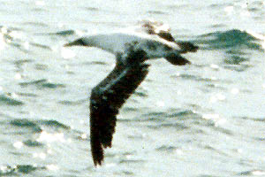

These photographs accompany records that have been recently submitted to the committee. This record has been ACCEPTED.

Masked Booby
Sula dactylatra
16 Feb 98, San Miguel Island, SBA 1998-063
© 1998 Shauna Bingham
Back to CBRC Rare Bird Photos